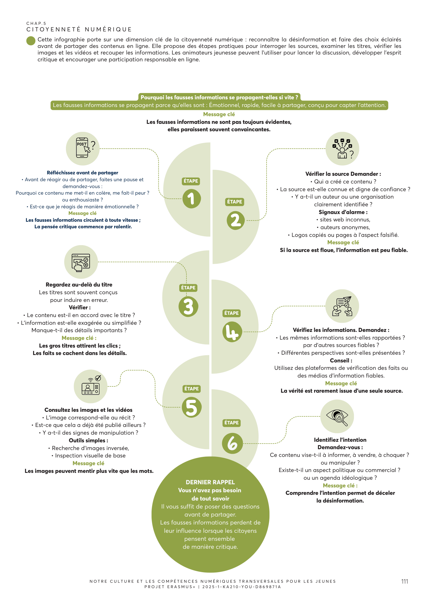

R É S U M É I N F O G R A P H I Q U E

Résumé visuel du chapitre : cliquez pour agrandir ou télécharger.
Télécharger l’infographie (PDF)Introduction
La citoyenneté numérique désigne la manière dont les individus participent, interagissent et contribuent de façon responsable dans les environnements numériques. Pour les jeunes qui grandissent dans des sociétés hyperconnectées, les espaces numériques ne sont pas dissociables de la vie civique ; ils constituent des lieux privilégiés où s’expriment les identités, se forment les communautés et se déploient les débats de société.
Ce chapitre envisage la citoyenneté numérique comme une pratique active, éthique et participative, plutôt que comme un ensemble de règles techniques ou de restrictions comportementales. Il explore comment les jeunes peuvent comprendre leurs droits et leurs responsabilités en ligne, dialoguer respectueusement avec des points de vue divers et contribuer positivement aux communautés numériques.
Une attention particulière est portée à des thèmes clés tels que la cyberéthique, l’inclusion numérique, la communication respectueuse et la participation citoyenne dans les espaces en ligne. Dans le cadre du projet Ourculture, ce chapitre s’appuie sur les étapes précédentes de collecte de ressources culturelles, d’élaboration de récits et de production de contenus médiatiques, et se concentre sur la manière dont ces productions peuvent être partagées de façon responsable et pertinente dans l’espace numérique. En combinant des explications conceptuelles et des outils pratiques, les animateurs jeunesse sont accompagnés dans leur rôle de guide auprès des jeunes, depuis une simple expression numérique jusqu’à un engagement civique et culturel significatif.
Cette approche s’inscrit dans le cadre de référentiels européens clés tels que le Cadre européen de compétences numériques (DigComp), la stratégie de l’UE pour la jeunesse et le cadre EntreComp, qui mettent l’accent sur la participation responsable, la pensée critique et l’initiative dans la vie numérique et civique.
Objectifs d’apprentissage
À la fin de ce chapitre, les animateurs jeunesse seront capables de :
- expliquer la citoyenneté numérique comme une pratique vécue plutôt que comme un ensemble de règles ;
- aider les jeunes à comprendre leurs droits et responsabilités en ligne ;
- faciliter une participation numérique éthique, inclusive et sûre ;
- utiliser des activités par projet pour relier les outils numériques à l’engagement civique ;
- s’inspirer des bonnes pratiques européennes et locales.
Ces activités encouragent également l’initiative et la réflexion par projet. Les participants découvrent comment une participation numérique responsable peut mener à la création d’initiatives numériques ou de projets communautaires significatifs.
Sections
- Section 1 | Comprendre la citoyenneté numérique
- Section 2 | Cyberéthique, inclusion et participation numérique
- Section 3 | Activités pratiques pour le travail auprès des jeunes
- Section 4 | Études de cas et pratiques inspirantes
Section 1 · Comprendre la citoyenneté numérique
1.1.Droits et responsabilités en ligne
La citoyenneté numérique désigne la capacité de participer aux environnements numériques de manière éthique, responsable et active, en reconnaissant à la fois les droits individuels et les responsabilités partagées. Dans les sociétés contemporaines, les espaces numériques ne sont pas séparés de la vie quotidienne ; ils fonctionnent comme des arènes publiques où s’expriment les opinions, se construisent les identités et se négocient les relations sociales. Pour les jeunes, la citoyenneté numérique ne se limite donc pas à la connaissance des règles des plateformes ou de leurs fonctions techniques. Elle implique de comprendre l’impact de ses actions numériques sur soi-même et sur autrui, de reconnaître les limites et de prendre des décisions éclairées dans des environnements souvent dynamiques, émotionnels et très exposés. Les citoyens numériques ne sont pas de simples utilisateurs passifs de la technologie. Ils participent activement aux environnements numériques en tant que contributeurs aux communautés en ligne. Comme nous l’avons vu dans les chapitres précédents de ce guide, les jeunes peuvent également devenir créateurs de contenu et conteurs lorsqu’ils documentent et partagent des expériences culturelles. Ce chapitre s’intéresse à la manière dont ces rôles sont exercés de façon responsable. Il met l’accent sur la façon dont les jeunes interagissent avec les autres, prennent des décisions éthiques et contribuent aux espaces numériques dans le respect des droits, de l’inclusion et du bien-être collectif. Plutôt que de redéfinir la participation numérique, ce chapitre s’appuie sur des compétences antérieures et se concentre spécifiquement sur leurs implications éthiques et civiques.
1.2.Droits en ligne
Les droits numériques constituent le fondement d’une participation démocratique et significative dans les environnements numériques. Ces droits sont étroitement liés aux droits fondamentaux de la personne, mais ils revêtent de nouvelles formes et font face à de nouveaux défis dans l’espace numérique.
Droit à la vie privée et à la protection des données.
Les jeunes ont le droit de contrôler leurs données personnelles et de comprendre comment elles sont collectées, stockées et partagées. Cela implique d’être sensibilisé à l’empreinte numérique et aux conséquences à long terme de la visibilité en ligne. La notion de vie privée ne doit pas être comprise comme secret ou retrait, mais comme la capacité de faire des choix éclairés concernant ses informations personnelles et son identité numérique.
Droit à la liberté d’expression
Les environnements numériques offrent aux jeunes d’importantes opportunités d’exprimer leurs opinions, leur identité et leurs perspectives culturelles. La liberté d’expression favorise la créativité, le dialogue et la participation démocratique. Parallèlement, ce droit s’inscrit dans un cadre légal et éthique, garantissant que l’expression ne nuise pas à autrui par le harcèlement, la discrimination ou les discours haineux.
Droit d’accès à l’information
L’accès à une information fiable et diversifiée est essentiel à une participation éclairée à la société. La citoyenneté numérique inclut donc le droit de rechercher, de recevoir et de partager l’information sans obstacles, manipulations ni discriminations inutiles. Le soutien à ce droit passe également par le développement des compétences en matière d’éducation aux médias, permettant aux jeunes d’évaluer les sources et de reconnaître la désinformation.
Droit à la protection contre les préjudices
Les jeunes ont droit à une protection contre le harcèlement en ligne, les discours haineux, l’exploitation, la manipulation et autres formes de préjudices numériques. Cela comprend l’accès à des mécanismes de signalement, à des réseaux de soutien et à des environnements numériques qui encouragent une participation sûre et respectueuse.
1.3.Responsabilités en ligne
La citoyenneté numérique implique également des responsabilités qui accompagnent ces droits. Un comportement responsable en ligne ne doit pas être perçu comme une restriction ou un contrôle, mais comme un moyen de maintenir des communautés numériques justes, inclusives et respectueuses.
Respect des droits et de la dignité d’autrui
Les espaces numériques sont des espaces partagés. Le respect de la diversité, la lutte contre le harcèlement et la reconnaissance des différentes identités, cultures et perspectives sont des éléments fondamentaux d’une participation responsable.
Création et partage responsables de contenu
Avant de publier ou de partager un contenu, les jeunes devraient tenir compte du consentement, du contexte et de l’impact potentiel.
À vous de réfléchir
Un ami publie une photo de vous en ligne sans vous le demander. Que pouvez-vous faire ? Qu’aurait-il dû faire avant de la publier ?
Ceci est particulièrement important lorsque le contenu concerne d’autres personnes, des pratiques culturelles ou des sujets sensibles. La création de contenu éthique contribue à maintenir la confiance et le respect au sein des communautés numériques.
Engagement critique envers l’information
Les citoyens numériques ont la responsabilité de questionner leurs sources, de reconnaître la désinformation et d’éviter de diffuser des contenus non vérifiés ou nuisibles. Le partage d’informations n’est pas un acte neutre ; c’est une forme de participation qui peut influencer la compréhension du public et le dialogue social.
Conscience des conséquences
Les actions numériques peuvent avoir des conséquences à long terme. Les commentaires, les images et les publications peuvent circuler bien au-delà de leur contexte initial et rester accessibles pendant de longues périodes. Comprendre cette permanence favorise une prise de décision plus consciente, réfléchie et éthique dans les environnements numériques. Lors de la publication de contenu tel qu’une vidéo, un podcast ou un blog, ces conséquences peuvent s’étendre au-delà du public immédiat et rester visibles dans le temps.
1.4.Implications pour le travail auprès des jeunes
Dans le contexte du travail auprès des jeunes, promouvoir la citoyenneté numérique signifie créer des espaces où les jeunes peuvent explorer leurs droits et leurs responsabilités à travers des situations numériques concrètes, plutôt que de mémoriser des règles abstraites. Par exemple, les animateurs jeunesse peuvent faciliter des discussions autour de situations telles que :
- une photo d’une activité de jeunesse partagée en ligne sans le consentement de tout le monde sur l’image ;
- des conflits ou des exclusions survenant dans les discussions de groupe ou les communautés en ligne ;
- la diffusion d’informations trompeuses au sein des réseaux de pairs ;
- les désaccords sur la liberté d’expression et la communication respectueuse.
Discuter de ces situations aide les jeunes à comprendre comment le numérique Les droits et les responsabilités interagissent dans la pratique quotidienne.
Pratiques efficaces en matière de travail auprès des jeunes :
- utiliser des scénarios et des dilemmes numériques concrets ;
- encourager le dialogue plutôt que le jugement ;
- relier les droits et les responsabilités aux expériences en ligne quotidiennes ;
- considérer les erreurs comme des occasions d’apprentissage dans des environnements sécuritaires ;
- aider les jeunes à réfléchir à l’impact de leurs actions numériques sur les autres.
En intégrant la citoyenneté numérique aux activités créatives, culturelles et participatives, le travail auprès des jeunes les aide à développer leur confiance en soi, leur conscience éthique et leur capacité d’agir dans les environnements numériques. Cette approche s’inscrit également naturellement dans la méthodologie Ourculture, où la participation numérique soutient la narration, l’exploration culturelle et les récits menés par les jeunes.

Section 2 · Cyberéthique, inclusion et participation numérique
Les environnements numériques ne sont pas des espaces neutres. Ils reflètent les normes sociales, les hiérarchies culturelles, les intérêts économiques et les rapports de pouvoir qui déterminent qui est visible, qui a la parole et qui reste inaudible. C’est pourquoi la citoyenneté numérique ne peut être dissociée des questions d’éthique, d’inclusion et de participation. Dans le contexte du travail auprès des jeunes, ces trois dimensions sont étroitement liées. Un comportement éthique contribue à créer des environnements inclusifs ; des environnements inclusifs favorisent la participation ; et une participation significative renforce la conscience éthique.
2.1.Cyberéthique : Agir avec conscience dans les espaces numériques
La cyberéthique désigne les principes éthiques qui guident les comportements dans les environnements numériques. Plutôt que des règles morales abstraites, elle concerne les décisions quotidiennes que prennent les individus lorsqu’ils communiquent, partagent, commentent ou créent du contenu en ligne. Des dilemmes éthiques surgissent souvent dans des situations ordinaires, comme par exemple :
- partager des photos ou des vidéos d’autres personnes ;
- commenter des sujets sensibles ou controversés ;
- représenter les histoires ou les expériences d’autres personnes ;
- répondre aux désaccords ou aux conflits en ligne ;
- décider de ce qui mérite attention ou visibilité.
Développer une conscience éthique en matière de cybersécurité aide les jeunes à reconnaître que les actions numériques ont toujours des conséquences sociales.
Les principes clés de la cyberéthique comprennent :
Consentement et représentation
Une pratique numérique éthique exige un consentement éclairé et continu avant l’enregistrement, le partage ou la réutilisation d’images, de voix ou de récits personnels. Dans les projets jeunesse et culturels, cela signifie aussi respecter la manière dont les individus et les communautés souhaitent être représentés, et pas seulement leur consentement à apparaître dans le contenu. Par exemple, lors de la publication d’une vidéo, d’un podcast ou d’un article de blog créé dans le cadre d’une activité jeunesse, il est important de s’assurer que tous les participants ont donné leur consentement éclairé et se sentent à l’aise avec la manière dont ils sont représentés.
Communication respectueuse
La participation numérique doit favoriser le dialogue plutôt que la confrontation. L’éthique numérique invite les jeunes à exprimer leur désaccord sans humiliation, harcèlement ni exclusion, en reconnaissant que le ton et le langage façonnent la culture des espaces en ligne. Cela est particulièrement pertinent lorsqu’il s’agit de modérer les commentaires sous une vidéo, de répondre aux réactions sur un article de blog ou d’interagir avec le public après la publication d’un contenu numérique.
Puissance, visibilité et algorithmes
Toutes les voix ne bénéficient pas d’une visibilité égale en ligne. Les algorithmes, les indicateurs de popularité et la conception des plateformes influencent ce qui est visible et ce qui reste caché. Par exemple, les systèmes de recommandation des plateformes de médias sociaux privilégient souvent les contenus suscitant des réactions fortes telles que la colère, l’enthousiasme ou la controverse. De ce fait, les contenus à forte charge émotionnelle ou clivants peuvent se diffuser plus largement que les informations équilibrées ou nuancées. Dans d’autres cas, les algorithmes peuvent amplifier les voix déjà populaires tandis que les points de vue moins visibles restent marginalisés. Développer une conscience éthique implique de comprendre comment ces systèmes façonnent l’attention numérique. Les jeunes ont tout intérêt à comprendre que ce qu’ils voient en ligne n’est ni neutre ni aléatoire, mais influencé par la conception des plateformes et les indicateurs d’engagement. S’interroger sur la visibilité, se demander quelles voix sont absentes et réfléchir aux raisons de la diffusion rapide de certains contenus sont des éléments essentiels d’une citoyenneté numérique responsable.
Responsabilité et imputabilité
La participation éthique implique d’assumer la responsabilité de ses actions en ligne. Cela comprend la reconnaissance des erreurs, la correction des informations erronées et une réponse constructive aux commentaires, plutôt que le déni ou l’escalade des conflits.
Considérations pratiques en matière de facilitation
Dans le cadre du travail auprès des jeunes, des conflits éthiques peuvent parfois survenir dans l’espace numérique lors d’activités ou d’interactions en ligne. Les animateurs et animatrices jeunesse ont un rôle important à jouer en y répondant de manière constructive et en montrant l’exemple d’un comportement numérique responsable.
Les réponses possibles en matière de facilitation peuvent inclure :
- encourager les participants à faire une pause et à réfléchir avant de réagir à un conflit en ligne ;
- favoriser un dialogue respectueux entre les participants en cas de malentendus ;
- lutter contre les comportements d’exclusion dans les discussions de groupe ou en ligne ;
- clarifier les règles communautaires et les accords de participation numérique ;
- modérer temporairement les discussions ou supprimer les contenus nuisibles si nécessaire.
Ces réponses devraient privilégier le dialogue, l’apprentissage et la réparation plutôt que la punition. Lorsque les jeunes constatent comment les conflits peuvent être gérés avec respect, ils développent une conscience accrue de la responsabilité et de la participation numérique responsable.
2.2.Inclusion : Au-delà de l’accès, une participation significative
Dans les environnements numériques, l’inclusion se résume souvent à l’accès aux appareils ou à une connexion internet. Or, l’accès seul ne garantit pas la participation. Les véritables obstacles à la participation sont fréquemment liés à la confiance en soi, à la représentation et à la légitimité perçue. Les jeunes peuvent rester silencieux non pas par manque de compétences, mais parce que :
- ils craignent le jugement ou l’exposition ;
- ne voient pas de personnes qui leur ressemblent représentées ;
- ont le sentiment que leur voix n’est pas valorisée ;
- associent les espaces numériques aux conflits ou au harcèlement.
La participation numérique inclusive exige donc une attention particulière aux conditions qui permettent aux jeunes de contribuer aux contenus en toute sécurité et avec confiance.
Les dimensions clés de l’inclusion comprennent :
Diversité des identités et des expériences
Les espaces numériques doivent être ouverts à la diversité des origines culturelles, des langues, des capacités et des expériences de vie. La reconnaissance de ces perspectives diverses contribue à prévenir la marginalisation et à éviter de renforcer les discours dominants. Conditions d’accès et de familiarité inégales L’accès des jeunes aux appareils, à la connectivité et à l’aisance numérique varie considérablement. Les pratiques inclusives en matière de travail auprès des jeunes privilégient les outils faciles d’accès, les formats flexibles et les environnements d’apprentissage collaboratifs.
Sécurité psychologique
La participation s’accroît lorsque les jeunes se sentent protégés du ridicule, de la honte ou de l’exclusion. Des règles claires, un accompagnement bienveillant et un dialogue respectueux sont essentiels pour créer un environnement où les participants se sentent en sécurité pour s’exprimer.
Légitimité de la voix
Les environnements inclusifs reconnaissent que chaque participant a quelque chose d’important à exprimer, quelles que soient ses compétences techniques, sa popularité ou son expérience antérieure. Le travail auprès des jeunes joue un rôle essentiel dans la création active de ces conditions. Il est important de prendre le temps de les mettre en place plutôt que de supposer qu’elles émergeront automatiquement.
2.3.Participation numérique : de l’expression à l’engagement civique et culturel
La participation numérique ne se limite pas à la simple publication de contenu en ligne. Elle implique d’interagir avec autrui, de contribuer à des récits partagés et de participer au débat public. Par exemple, lorsqu’on partage une histoire culturelle par le biais d’une vidéo, d’un podcast ou d’une publication sur les réseaux sociaux, la participation ne s’arrête pas à la publication. Elle se poursuit par le dialogue, les retours et l’interaction avec le public. Il est utile de faire la distinction entre expression numérique et participation numérique. L’expression numérique désigne des actions individuelles telles que la publication de contenu, le partage d’opinions, les commentaires ou les réactions en ligne. Si ces actions permettent aux jeunes de s’exprimer, elles n’impliquent pas toujours d’interaction ni de processus collectif. La participation numérique, quant à elle, implique d’interagir avec autrui, de contribuer aux discussions, de collaborer en tenant compte des différents points de vue et de participer à la prise de décision partagée ou au dialogue communautaire. La participation dépasse ainsi la simple visibilité individuelle et devient une forme d’engagement civique et culturel.
Une participation numérique significative peut inclure :
- partager des histoires ancrées dans des expériences vécues ;
- participer respectueusement aux discussions sur les questions sociales ou culturelles ;
- collaborer malgré les différences et les perspectives ;
- relier les voix locales aux communautés plus larges.
Lorsque la participation est soutenue par une conscience éthique et des environnements inclusifs, les espaces numériques peuvent devenir des lieux d’apprentissage où les jeunes développent leur autonomie plutôt que leur simple visibilité. Pour les professionnels de la jeunesse, soutenir la participation numérique implique de :
- modéliser un comportement numérique éthique et inclusif ;
- faciliter un dialogue respectueux et résoudre les conflits ;
- encourager la réflexion sur les expériences de participation ;
- relier l’expression numérique à des contextes culturels et civiques plus larges.
La participation numérique offre également aux jeunes la possibilité de développer des projets créateurs de valeur sociale ou culturelle. Lorsqu’ils conçoivent des campagnes en ligne, des plateformes communautaires ou des initiatives de narration numérique, ils conjuguent participation citoyenne et compétences entrepreneuriales telles que l’initiative, la collaboration et le développement de projets. En ce sens, la citoyenneté numérique peut aussi être perçue comme la capacité à façonner les environnements numériques de manière responsable, tout en transformant les idées en actions concrètes. Cette approche s’inscrit également dans la méthodologie Ourculture, où les outils numériques soutiennent la narration, l’exploration culturelle et les récits portés par les jeunes.
2.4.Initiative et innovation numérique responsable
La citoyenneté numérique ne se limite pas aux comportements dans les espaces en ligne existants ; elle concerne également la création de nouvelles initiatives numériques. Aujourd’hui, les jeunes participent de plus en plus à la conception d’environnements numériques par le biais de blogs, de plateformes, de campagnes ou de projets collaboratifs en ligne. Développer leur esprit d’initiative et leur capacité à penser par projet leur permet de passer d’une participation passive à une contribution active. Ces compétences incluent l’identification des besoins au sein des communautés, la conception de solutions et l’organisation d’efforts collaboratifs pour y répondre.
Les cadres de référence pour l’entrepreneuriat, tels que le modèle EntreComp de la Commission européenne, définissent l’entrepreneuriat comme la capacité à transformer des idées en actions grâce à la créativité, l’initiative et la collaboration. Dans le contexte du travail auprès des jeunes, ces compétences peuvent les aider à concevoir des projets numériques responsables qui favorisent l’inclusion, le dialogue et l’expression culturelle.

Associées à une conscience éthique, ces initiatives contribuent à garantir que l’innovation numérique renforce la participation démocratique plutôt que de favoriser l’exclusion ou la désinformation. Lors du développement de projets numériques tels que des blogs, des plateformes ou des campagnes de narration, ces considérations éthiques et participatives sont intégrées au processus de conception lui-même. Cette perspective est étroitement liée au cadre EntreComp, qui définit l’entrepreneuriat comme la capacité à transformer des idées en actions grâce à la créativité, l’initiative et la responsabilité.
2.5.Pourquoi c’est important pour le travail auprès des jeunes
L’éthique numérique, l’inclusion et la participation ne doivent pas être considérées comme des sujets d’apprentissage distincts. Ensemble, elles façonnent la manière dont les jeunes vivent les environnements numériques et déterminent si ces environnements deviennent des espaces d’émancipation et de dialogue ou des sources d’exclusion et de conflit.
Les pratiques efficaces en matière de travail auprès des jeunes sont donc les suivantes :
- intégrer la réflexion éthique aux activités créatives ;
- privilégier l’inclusion dès la conception plutôt que comme une réflexion a posteriori ;
- considérer la participation comme un processus d’apprentissage plutôt que comme une performance ;
- soutenir les animateurs jeunesse en tant que facilitateurs plutôt que contrôleurs.
Ces dimensions reflètent également les priorités de la stratégie de l’UE pour la jeunesse, qui promeut la participation, l’inclusion et la citoyenneté active des jeunes dans les espaces numériques et physiques.
Section 3 · Activités pratiques pour le travail auprès des jeunes


Section 4 · Études de cas et pratiques inspirantes
4.1. Étude de cas 1 - Participation des jeunes et citoyenneté numérique en Turquie
Initiative du Parlement des jeunes
Présentation du projet :
Les initiatives de Parlements des jeunes, organisées au sein des centres de jeunesse en Turquie, visent à renforcer la participation des jeunes au dialogue social, à l’engagement civique et aux processus démocratiques. Traditionnellement organisés par le biais de réunions en présentiel, de nombreux Parlements des jeunes intègrent de plus en plus de plateformes de communication numérique et d’outils de participation en ligne afin d’accroître l’implication des jeunes. Grâce à ces plateformes numériques, les jeunes peuvent partager des idées, discuter des enjeux communautaires et collaborer à des projets répondant aux défis sociaux, culturels et environnementaux. Ces initiatives offrent un cadre concret où la citoyenneté numérique s’expérimente par le dialogue, la représentation et la prise de décision collective.
Objectifs et axes d’apprentissage
L’initiative vise à :
- encourager la participation des jeunes à la prise de décision communautaire ;
- renforcer le dialogue démocratique et la conscience civique ;
- promouvoir une communication et un débat numériques responsables ;
- soutenir les jeunes dans l’expression de leurs idées et la représentation de leurs perspectives.
Grâce à ces processus, les jeunes participants développent une conscience accrue de leurs droits et responsabilités numériques dans le cadre du dialogue public.
Contenu et approche méthodologique
Les activités du Parlement des jeunes combinent des méthodes de travail participatif auprès des jeunes avec des outils de communication numérique.
Les éléments clés comprennent :
- débats et discussions animés par des jeunes ;
- plateformes numériques de partage d’idées et groupes de communication ;
- développement de projets collaboratifs abordant des problématiques locales ;
- animation par des animateurs et coordinateurs de centres jeunesse.
Les participants sont encouragés à analyser les besoins de la communauté, à formuler des propositions et à engager un dialogue respectueux avec leurs pairs et les acteurs locaux.
Groupe cible
- Les jeunes âgés d’environ 15 à 29 ans.
- Participants du centre de jeunesse.
- Les responsables et animateurs de jeunesse.
- Les communautés de jeunes locales à travers la Turquie.
Éléments clés de la citoyenneté numérique
- Dialogue démocratique et participation civique.
- Communication et débat numériques responsables.
- Représentation et expression des jeunes.
- Résolution collaborative de problèmes dans les environnements numériques.
Impacts
Les initiatives du Parlement des jeunes contribuent à renforcer le rôle des jeunes, leur confiance en soi pour exprimer leurs idées et participer à des discussions sociales. Les participants signalent souvent :
- une meilleure connaissance des droits et devoirs civiques ;
- de meilleures compétences en communication et en dialogue ;
- une plus grande motivation à s’engager dans les initiatives communautaires.
En combinant la participation des jeunes aux outils de communication numérique, cette initiative démontre comment les jeunes peuvent vivre la citoyenneté numérique comme une forme active d’engagement civique.
Lien avec la pratique du travail auprès des jeunes
Dans différents contextes - des plateformes de démocratie numérique à l’activisme des jeunes et à la participation communautaire -, ces initiatives montrent que la citoyenneté numérique se développe plus efficacement lorsque les jeunes sont soutenus pour participer, collaborer et exprimer leurs points de vue de manière significative.
Pour les animateurs jeunesse, ces exemples soulignent l’importance de :
- lier la participation numérique à l’engagement civique ;
- faciliter un dialogue respectueux et une communication éthique ;
- encourager les initiatives menées par les jeunes et la prise de décision collaborative ;
- soutenir des environnements inclusifs où des voix diverses peuvent être entendues.
Grâce à de telles pratiques, la citoyenneté numérique devient non seulement un ensemble de principes, mais une expérience vécue de participation, de responsabilité et de dialogue collectif.
4.2. Étude de cas 2 - Decidim : Plateforme de démocratie numérique
Présentation du projet : Decidim est une plateforme de participation numérique open source à l’origine
Développée à Barcelone pour soutenir la prise de décision démocratique et la participation citoyenne, cette plateforme permet aux collectivités, aux municipalités et aux organisations de la société civile d’organiser en ligne des consultations, des discussions et des processus de décision collaboratifs. Grâce à Decidim, les citoyens, y compris les jeunes, peuvent proposer des idées, débattre des politiques, voter sur des initiatives et contribuer aux processus de prise de décision publique.
Objectifs et axes d’apprentissage
L’initiative vise à :
- renforcer la participation démocratique dans les environnements numériques ;
- donner aux citoyens les moyens de participer à la prise de décision collective ;
- accroître la transparence et la responsabilité dans la gouvernance publique ;
- encourager la participation inclusive aux processus civiques.
Pour les jeunes, la plateforme offre l’opportunité de vivre la citoyenneté numérique comme une participation démocratique active. Contenu et approche méthodologique Decidim combine des outils numériques avec des pratiques de gouvernance participative.
Les éléments clés comprennent :
- consultations et débats en ligne ;
- systèmes de proposition collaborative ;
- processus de budgétisation participative ;
- mécanismes de prise de décision transparents.
Les participants peuvent soumettre des propositions, échanger des idées et suivre l’évolution des décisions. La plateforme privilégie la transparence, permettant aux utilisateurs de mesurer l’impact de leurs contributions.
Groupe cible
- Les citoyens et les membres de la communauté.
- Les jeunes intéressés par la participation citoyenne.
- Les organisations de la société civile.
- Les municipalités et les collectivités locales.
Éléments clés de la citoyenneté numérique
- La participation démocratique dans les environnements numériques.
- Prise de décision collective et dialogue.
- Transparence et responsabilité.
- L’engagement civique inclusif.
Impact
Decidim a été adopté par de nombreuses municipalités et organisations. Partout en Europe et au-delà, la plateforme a permis à des milliers de citoyens de participer aux processus démocratiques et de contribuer à la prise de décision publique. Dans le cadre du travail auprès des jeunes, Decidim illustre comment les plateformes numériques peuvent favoriser une citoyenneté numérique active et une démocratie participative.
4.3. Étude de cas 3 - Dialogue européen des jeunes
Aperçu du projet :
Le Dialogue européen des jeunes est un processus participatif qui met en relation les jeunes et les décideurs politiques à travers l’Europe. Par le biais de consultations, d’ateliers et de plateformes numériques, les jeunes partagent leurs points de vue sur les questions sociales et contribuent à l’élaboration des politiques de jeunesse aux niveaux national et européen. Les outils numériques jouent un rôle important en permettant une participation massive des jeunes et en garantissant que des voix diverses soient entendues.
Objectifs et axes d’apprentissage
L’initiative vise à :
- renforcer la participation des jeunes à la prise de décision démocratique ;
- mettre les jeunes en relation avec les processus politiques ;
- promouvoir le dialogue entre les jeunes et les décideurs ;
- soutenir une représentation des jeunes inclusive et diversifiée.
Contenu et approche méthodologique
Le Dialogue européen des jeunes fonctionne selon un cycle de consultations et des événements participatifs impliquant des jeunes de différents pays.
Les principales activités comprennent :
- consultations et enquêtes en ligne ;
- ateliers et conférences pour les jeunes ;
- plateformes numériques pour la collecte d’idées et de commentaires ;
- discussions collaboratives entre les représentants des jeunes et les décideurs politiques.
Ces processus permettent aux jeunes de partager leurs expériences et de contribuer aux discussions politiques.
Groupe cible
- Les jeunes de 13 à 30 ans à travers l’Europe.
- Les organisations de jeunesse et les animateurs de jeunesse.
- Les décideurs et les institutions impliqués dans les politiques de jeunesse.
Éléments clés de la citoyenneté numérique
- Participation démocratique et engagement civique.
- Dialogue entre les citoyens et les institutions.
- Représentation de la diversité des voix des jeunes.
- Élaboration collaborative de politiques.
Impact
Le Dialogue européen des jeunes a influencé plusieurs recommandations politiques de la stratégie de l’UE pour la jeunesse. Il a également permis de sensibiliser les jeunes au fait que leur voix peut contribuer à façonner les politiques et les priorités sociales. Cette initiative démontre comment la participation numérique peut relier les perspectives des jeunes locaux aux processus décisionnels européens plus larges.
4.4. Étude de cas 4 - Programme d’entrepreneuriat des jeunes
(GINOP & VEKOP)
Aperçu du projet :
Le Programme d’entrepreneuriat des jeunes (GINOP et VEKOP) est une initiative nationale lancée en Hongrie en 2014 pour encourager les jeunes à créer leur propre entreprise. Le programme propose des formations à l’entrepreneuriat, du mentorat et un soutien financier aux jeunes entreprises. Il s’adresse aux jeunes âgés de 18 à 30 ans (et dans certains cas jusqu’à 35 ans), avec un accent particulier sur les jeunes chômeurs et les personnes intéressées à développer leurs propres idées commerciales. Cette initiative se déploie à travers des programmes régionaux en Hongrie, permettant d’adapter le contenu des formations et les dispositifs d’accompagnement aux réalités du marché du travail local. Elle allie formation et soutien pratique, notamment par le biais d’ateliers de création d’entreprise et de dispositifs de financement pour les jeunes pousses.
Objectifs et activités :
Le programme vise à développer les compétences entrepreneuriales et à aider les participants à transformer leurs idées commerciales en entreprises viables. Les activités comprennent :
- cours de formation à l’entrepreneuriat axés sur la planification d’entreprise et gestion financière ;
- mentorat et coaching par des professionnels expérimentés ;
- soutien à l’élaboration de plans d’affaires ;
- accès à un financement de démarrage pour certains projets.
Les participants suivent des sessions de formation structurées où ils apprennent à analyser les marchés, à développer des produits ou des services et à construire des modèles commerciaux durables.
Contenu et approche méthodologique
Ce programme allie formation structurée et mentorat pratique pour aider les jeunes participants à développer leurs compétences entrepreneuriales. Ils assistent à des ateliers sur la planification d’entreprise, la gestion financière et l’analyse de marché, tout en bénéficiant des conseils de mentors expérimentés. L’approche repose sur l’apprentissage par le développement de projets, où les participants transforment progressivement leurs idées commerciales en plans concrets. En parallèle des sessions de formation, ils reçoivent des retours sur leurs idées et explorent les pistes pour bâtir des initiatives durables.
Cette combinaison d’éducation, de mentorat et de soutien financier aide les jeunes à passer de leurs idées initiales à des projets entrepreneuriaux viables. Les outils numériques sont également utilisés pendant le processus de formation, par exemple via des plateformes de collaboration en ligne, des présentations numériques et des séances de mentorat virtuelles, permettant aux participants de développer des compétences en communication et en développement de projet dans des environnements numériques.
Groupe cible
- Les jeunes de 18 à 30 ans (jusqu’à 35 ans dans certains programmes).
- Jeunes chômeurs à la recherche de nouvelles opportunités de carrière.
- Les jeunes intéressés par la création de leur propre entreprise ou initiative.
- Participants ayant des idées d’entreprise ou des concepts de projet en phase de démarrage.
- Jeunes adultes souhaitant développer leurs compétences en entrepreneuriat et en gestion de projet.
Éléments clés de la citoyenneté numérique
Ce programme encourage une participation responsable aux environnements économiques numériques. Les participants apprennent à utiliser les plateformes numériques pour communiquer des idées, promouvoir des projets et collaborer avec des partenaires. Grâce à des activités telles que la recherche en ligne, les présentations numériques et les échanges avec des mentors, les jeunes développent une conscience des comportements numériques responsables, de la crédibilité de l’information et de la représentation éthique des initiatives. Ces expériences renforcent leur capacité à participer avec confiance et responsabilité aux espaces professionnels et entrepreneuriaux numériques.
Impact
Ce programme a aidé des milliers de jeunes à développer leurs compétences entrepreneuriales et à lancer de nouvelles initiatives à travers la Hongrie. Les participants acquièrent une expérience pratique en transformant des idées en projets structurés, tout en développant leur confiance en soi, leur leadership et leurs capacités de résolution de problèmes. En combinant formation, mentorat et soutien financier, cette initiative réduit les obstacles à l’entrepreneuriat et encourage les jeunes à explorer des solutions innovantes aux défis économiques et sociaux.
Lien avec la pratique du travail auprès des jeunes
Dans le contexte du travail auprès des jeunes, ce programme démontre comment l’apprentissage de l’entrepreneuriat peut leur permettre de transformer leurs idées en initiatives concrètes. Les animateurs et animatrices peuvent adapter des approches similaires en aidant les participants à identifier les opportunités au sein de leur communauté, à développer des idées de projets et à les présenter. Intégrer la pensée entrepreneuriale dans les activités jeunesse contribue à renforcer l’initiative, la résolution de problèmes et la collaboration, tout en encourageant les jeunes à façonner activement des projets sociaux, culturels ou numériques au sein de leur communauté.
4.5. Étude de cas 5 - Conception de programmes d’incubation et d’innovation pour les start-up
Aperçu du projet :
Design Terminal est une agence d’innovation et un incubateur basé à Budapest qui accompagne les start-up, les entrepreneurs et les projets innovants en Europe centrale. Initialement créée comme une initiative gouvernementale, puis transformée en entreprise sociale, Design Terminal collabore avec des start-up, des entreprises et des établissements d’enseignement pour favoriser l’innovation et l’entrepreneuriat. L’organisation propose des programmes d’incubation, des dispositifs de mentorat et des concours d’innovation destinés à aider les entrepreneurs à développer des entreprises à fort potentiel de croissance. Elle collabore également avec de grandes entreprises et des réseaux internationaux afin de connecter les start-up hongroises aux marchés mondiaux.
Objectifs et activités :
Design Terminal vise à renforcer les écosystèmes entrepreneuriaux à travers des programmes de soutien pratique et d’innovation. Ses activités comprennent :
- programmes d’incubation de start-up soutenant les entrepreneurs en phase de démarrage ;
- mentorat et coaching assurés par des entrepreneurs et des professionnels expérimentés du secteur ;
- laboratoires d’innovation et hackathons abordant des thématiques sociales ou de défis technologiques ;
- partenariats avec des universités et des entreprises pour soutenir les jeunes entreprises.
Contenu et approche méthodologique
Design Terminal utilise une approche pédagogique axée sur l’innovation, combinant programmes d’incubation, mentorat et expérimentation collaborative. Les participants prennent part à des ateliers, des laboratoires d’innovation et des hackathons où ils développent des idées, testent des solutions et affinent leurs concepts commerciaux avec le soutien de mentors et d’experts du secteur. La méthodologie privilégie l’apprentissage par la pratique, le travail d’équipe et le retour d’information. En mettant en relation des start-up avec des professionnels expérimentés, des partenaires corporatifs et des réseaux internationaux, les participants acquièrent une expérience pratique des processus d’innovation et de l’entrepreneuriat tout en développant leurs propres projets en situation réelle. Ces activités s’appuient souvent sur des outils de collaboration numérique, des plateformes de prototypage en ligne et des canaux de communication virtuels, permettant aux équipes de co-créer des solutions, de présenter leurs idées et de se connecter aux réseaux d’innovation internationaux.
Groupe cible
- Les jeunes entrepreneurs et les fondateurs de start-up.
- Jeunes professionnels intéressés par l’innovation et l’entrepreneuriat.
- Des étudiants universitaires qui développent des idées technologiques ou commerciales.
- Les équipes participant à des concours d’innovation ou à des hackathons.
- Jeunes innovateurs en quête de mentorat et de réseaux internationaux.
Éléments clés de la citoyenneté numérique
Les participants développent une conscience de l’innovation responsable et de l’impact social des technologies numériques. À travers des projets collaboratifs et des défis d’innovation, ils réfléchissent à la manière dont les outils numériques influencent les communautés, les utilisateurs et les marchés. Les programmes encouragent la transparence, la prise de décision éthique et une communication responsable lors du développement et de la présentation de produits ou de services numériques. Ces expériences aident les participants à comprendre que l’innovation numérique exige également une responsabilité et une prise en compte de ses implications sociales plus larges.
Impact
Design Terminal a largement contribué au développement de l’écosystème des start-up en Hongrie en accompagnant les entrepreneurs dans la transformation de leurs idées novatrices en projets viables. Grâce à des programmes d’incubation et de mentorat, les participants acquièrent une expérience pratique, se constituent un réseau professionnel et bénéficient d’un accompagnement stratégique. Cette initiative encourage l’expérimentation et la collaboration, aidant ainsi les jeunes innovateurs à développer des solutions aux défis sociaux, technologiques et économiques, tout en renforçant la culture de l’innovation dans la région.
Lien avec la pratique du travail auprès des jeunes
Dans le cadre du travail auprès des jeunes, Design Terminal démontre comment un apprentissage fondé sur l’innovation peut les inciter à développer des solutions créatives à des problèmes concrets. Les animateurs et animatrices peuvent adapter des approches similaires en organisant des ateliers d’idées, des ateliers collaboratifs ou des concours d’innovation à petite échelle où les participants explorent les problématiques de leur communauté et conçoivent des projets ensemble. Ces activités renforcent l’esprit d’initiative, le travail d’équipe et la créativité, tout en encourageant les jeunes à s’impliquer activement dans des initiatives numériques, sociales ou culturelles au sein de leur communauté.